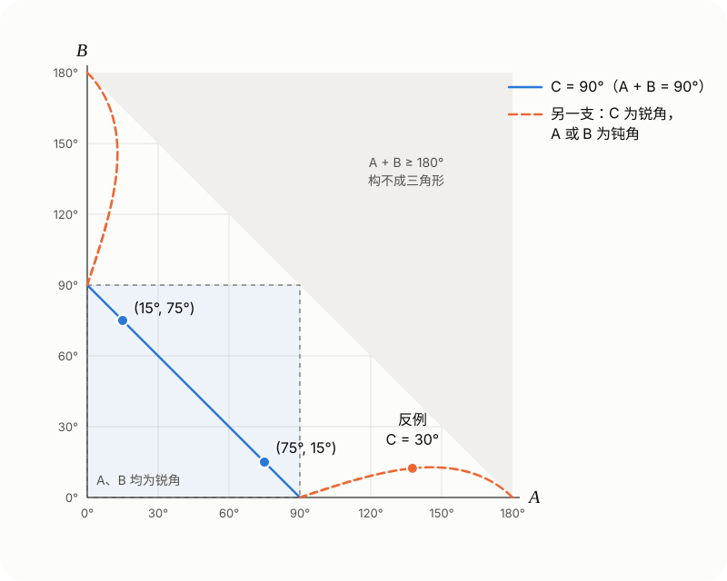

<meta data-alternate="https://freshmark.sunisalex.org/en/posts/math/sin-squared-sum-equals-sin-c/" data-article="true" data-canonical="https://freshmark.sunisalex.org/posts/math/sin-squared-sum-equals-sin-c/" data-description="由一道解三角形多选题出发，证明 A、B 为锐角时 sin²A + sin²B = sin C 推出 C = 90°，并求出这个等式的全部解，说明“A、B 为锐角”为什么不能去掉：去掉之后，C 可以是任意锐角。" data-freshmark-page data-title="sin²A + sin²B = sin C 一定是直角三角形吗？ — Freshmark"><main><header class="container article-header"><a href="/" class="back-link">← 返回全部文章</a><p class="eyebrow article-subject">数学</p><h1>sin²A + sin²B = sin C 一定是直角三角形吗？</h1><p class="article-dek">由一道解三角形多选题出发，证明 A、B 为锐角时 sin²A + sin²B = sin C 推出 C = 90°，并求出这个等式的全部解，说明“A、B 为锐角”为什么不能去掉：去掉之后，C 可以是任意锐角。</p><div class="article-meta"><time datetime="2026-10-13">2026年10月13日</time><span>3 分钟阅读</span><span>数学 · 三角函数 · 解三角形 · 多选题</span><span class="view-count" data-article-view-count hidden>本文访问量 <strong data-article-views></strong></span><a href="index.md" download>下载 Markdown</a><button type="button" class="article-share" data-share-article data-share-text="由一道解三角形多选题出发，证明 A、B 为锐角时 sin²A + sin²B = sin C 推出 C = 90°，并求出这个等式的全部解，说明“A、B 为锐角”为什么不能去掉：去掉之后，C 可以是任意锐角。" data-share-title="sin²A + sin²B = sin C 一定是直角三角形吗？"><span data-share-label>分享文章</span></button><output aria-live="polite" class="visually-hidden" data-share-status role="status"></output></div></header><div class="article-wrap"><aside class="toc"><div class="toc-head"><p>本文目录</p><button type="button" class="toc-toggle" aria-expanded="false" aria-label="展开或收起目录" data-toc-toggle><span class="toc-toggle-label">目录</span><span class="toc-toggle-icon" aria-hidden="true"></span></button></div><nav aria-label="目录" class="toc-links" data-toc-links><a href="#两道题" class="toc-level-2">两道题</a><a href="#题二的证明" class="toc-level-2">题二的证明</a><a href="#方法一比较大小" class="toc-level-3">方法一：比较大小</a><a href="#方法二和差化积" class="toc-level-3">方法二：和差化积</a><a href="#回到题一" class="toc-level-2">回到题一</a><a href="#为什么必须要求-ab-为锐角" class="toc-level-2">为什么必须要求 A、B 为锐角</a><a href="#化成边的关系" class="toc-level-3">化成边的关系</a><a href="#一个具体的反例" class="toc-level-3">一个具体的反例</a><a href="#全部的解" class="toc-level-3">全部的解</a><a href="#小结" class="toc-level-3">小结</a></nav></aside><article class="prose"><h2 id="两道题">两道题</h2><p><strong>题一</strong>（来源：微信公众号“浙江省高中数学”）已知 <span class="math-expression math-inline" data-math-source="\triangle ABC"></span>&#32;的面积为 <span class="math-expression math-inline" data-math-source="\dfrac14"></span>，<span class="math-expression math-inline" data-math-source="\cos 2A+\cos 2B+2\sin C=2"></span>，<span class="math-expression math-inline" data-math-source="\cos A\cos B\sin C=\dfrac14"></span>，则（　）</p><p>A. <span class="math-expression math-inline" data-math-source="\sin C=\sin^2A+\sin^2B"></span>　　B. <span class="math-expression math-inline" data-math-source="AB=\sqrt2"></span></p><p>C. <span class="math-expression math-inline" data-math-source="\sin A+\sin B=\dfrac{\sqrt6}{2}"></span>　　D. <span class="math-expression math-inline" data-math-source="AC^2+BC^2=3"></span></p><p><strong>题二</strong>（来源：B 站视频）在 <span class="math-expression math-inline" data-math-source="\triangle ABC"></span>&#32;中，<span class="math-expression math-inline" data-math-source="A,B"></span>&#32;为锐角，且 <span class="math-expression math-inline" data-math-source="\sin^2A+\sin^2B=\sin C"></span>。证明：<span class="math-expression math-inline" data-math-source="C=90^\circ"></span>。</p><p>题一的选项 A 正是题二的条件。下面先证题二，再用它解题一，最后回答：如果去掉“<span class="math-expression math-inline" data-math-source="A,B"></span>&#32;为锐角”，结论还成立吗？</p><h2 id="题二的证明">题二的证明</h2><h3 id="方法一比较大小">方法一：比较大小</h3><p>由 <span class="math-expression math-inline" data-math-source="\sin C=\sin(A+B)=\sin A\cos B+\cos A\sin B"></span>，条件可以改写成</p><p><span class="math-expression math-display" data-math-source="\sin A\,(\sin A-\cos B)+\sin B\,(\sin B-\cos A)=0。" data-math-display></span></p><p>因为 <span class="math-expression math-inline" data-math-source="A,B\in\left(0,\dfrac{\pi}{2}\right)"></span>，所以 <span class="math-expression math-inline" data-math-source="\dfrac{\pi}{2}-A"></span>、<span class="math-expression math-inline" data-math-source="\dfrac{\pi}{2}-B"></span>&#32;也在 <span class="math-expression math-inline" data-math-source="\left(0,\dfrac{\pi}{2}\right)"></span>&#32;内，而正弦函数在这个区间上单调递增。</p><ul><li>若 <span class="math-expression math-inline" data-math-source="A+B&gt;\dfrac{\pi}{2}"></span>，则 <span class="math-expression math-inline" data-math-source="A&gt;\dfrac{\pi}{2}-B"></span>，所以 <span class="math-expression math-inline" data-math-source="\sin A&gt;\sin\left(\dfrac{\pi}{2}-B\right)=\cos B"></span>；同理 <span class="math-expression math-inline" data-math-source="\sin B&gt;\cos A"></span>。又 <span class="math-expression math-inline" data-math-source="\sin A,\sin B&gt;0"></span>，左边大于 <span class="math-expression math-inline" data-math-source="0"></span>，矛盾。</li><li>若 <span class="math-expression math-inline" data-math-source="A+B&lt;\dfrac{\pi}{2}"></span>，同理两个括号都小于 <span class="math-expression math-inline" data-math-source="0"></span>，左边小于 <span class="math-expression math-inline" data-math-source="0"></span>，矛盾。</li></ul><p>所以 <span class="math-expression math-inline" data-math-source="A+B=\dfrac{\pi}{2}"></span>，即 <span class="math-expression math-inline" data-math-source="C=90^\circ"></span>。反过来，<span class="math-expression math-inline" data-math-source="C=90^\circ"></span>&#32;时 <span class="math-expression math-inline" data-math-source="\sin A=\cos B"></span>、<span class="math-expression math-inline" data-math-source="\sin B=\cos A"></span>，等式成立。</p><h3 id="方法二和差化积">方法二：和差化积</h3><p><span class="math-expression math-display" data-math-source="\begin{aligned} &amp;\sin^2A+\sin^2B\\ ={}&amp;1-\frac{\cos 2A+\cos 2B}{2}\\ ={}&amp;1-\cos(A+B)\cos(A-B)\\ ={}&amp;1+\cos C\cos(A-B)， \end{aligned}" data-math-display></span></p><p>所以条件等价于</p><p><span class="math-expression math-display" data-math-source="\cos C\cos(A-B)=\sin C-1。\tag{1}" data-math-display></span></p><p><span class="math-expression math-inline" data-math-source="A,B"></span>&#32;为锐角，所以 <span class="math-expression math-inline" data-math-source="|A-B|&lt;\dfrac{\pi}{2}"></span>，<span class="math-expression math-inline" data-math-source="\cos(A-B)&gt;0"></span>。</p><ul><li>若 <span class="math-expression math-inline" data-math-source="C&lt;90^\circ"></span>，则 (1) 左边大于 <span class="math-expression math-inline" data-math-source="0"></span>，右边 <span class="math-expression math-inline" data-math-source="\sin C-1&lt;0"></span>，矛盾。</li><li>若 <span class="math-expression math-inline" data-math-source="C&gt;90^\circ"></span>，则 <span class="math-expression math-inline" data-math-source="A+B&lt;90^\circ"></span>，<span class="math-expression math-inline" data-math-source="0\le|A-B|&lt;A+B&lt;90^\circ"></span>，于是 <span class="math-expression math-inline" data-math-source="\cos(A-B)&gt;\cos(A+B)=-\cos C&gt;0"></span>。两边乘以 <span class="math-expression math-inline" data-math-source="\cos C&lt;0"></span>，得 <span class="math-expression math-display" data-math-source="\sin C-1=\cos C\cos(A-B)&lt;-\cos^2C=\sin^2C-1，" data-math-display></span> 即 <span class="math-expression math-inline" data-math-source="\sin C&lt;\sin^2C"></span>，于是 <span class="math-expression math-inline" data-math-source="\sin C&gt;1"></span>，矛盾。</li></ul><p>所以 <span class="math-expression math-inline" data-math-source="C=90^\circ"></span>。方法二多走了几步，但 (1) 下面还要用：它能给出原等式的全部解。</p><h2 id="回到题一">回到题一</h2><p><strong>A 正确。</strong> 由 <span class="math-expression math-inline" data-math-source="\cos 2A=1-2\sin^2A"></span>，<span class="math-expression math-inline" data-math-source="\cos 2B=1-2\sin^2B"></span>，第一个条件化为</p><p><span class="math-expression math-display" data-math-source="\begin{gathered} 2-2\left(\sin^2A+\sin^2B\right)+2\sin C=2\\ \iff \sin C=\sin^2A+\sin^2B。 \end{gathered}" data-math-display></span></p><p><strong>接下来要用题二，就得先知道 <span class="math-expression math-inline" data-math-source="A,B"></span>&#32;都是锐角。</strong> 这由第二个条件给出：<span class="math-expression math-inline" data-math-source="\cos A\cos B\sin C=\dfrac14&gt;0"></span>，而 <span class="math-expression math-inline" data-math-source="\sin C&gt;0"></span>，所以 <span class="math-expression math-inline" data-math-source="\cos A"></span>&#32;与 <span class="math-expression math-inline" data-math-source="\cos B"></span>&#32;同号。三角形最多有一个钝角，两者不能同为负，只能同为正，即 <span class="math-expression math-inline" data-math-source="A,B"></span>&#32;都是锐角。由题二，<span class="math-expression math-inline" data-math-source="C=90^\circ"></span>。</p><p>于是 <span class="math-expression math-inline" data-math-source="\sin C=1"></span>，<span class="math-expression math-inline" data-math-source="B=90^\circ-A"></span>，第二个条件变为 <span class="math-expression math-inline" data-math-source="\cos A\sin A=\dfrac14"></span>，即 <span class="math-expression math-inline" data-math-source="\sin 2A=\dfrac12"></span>，<span class="math-expression math-inline" data-math-source="A=15^\circ"></span>&#32;或 <span class="math-expression math-inline" data-math-source="75^\circ"></span>。</p><p><strong>B 正确。</strong> 设斜边 <span class="math-expression math-inline" data-math-source="AB=c"></span>，则 <span class="math-expression math-inline" data-math-source="BC=c\sin A"></span>，<span class="math-expression math-inline" data-math-source="AC=c\cos A"></span>。面积</p><p><span class="math-expression math-display" data-math-source="\frac12\cdot c\sin A\cdot c\cos A=\frac{c^2}{4}\sin 2A=\frac{c^2}{8}=\frac14，" data-math-display></span></p><p>所以 <span class="math-expression math-inline" data-math-source="c^2=2"></span>，<span class="math-expression math-inline" data-math-source="AB=\sqrt2"></span>。</p><p><strong>C 正确。</strong> <span class="math-expression math-inline" data-math-source="\sin A+\sin B=\sin A+\cos A=\sqrt{1+\sin 2A}=\sqrt{\dfrac32}=\dfrac{\sqrt6}{2}"></span>。</p><p><strong>D 错误。</strong> <span class="math-expression math-inline" data-math-source="AC^2+BC^2=AB^2=2\ne3"></span>。</p><p><strong>答案：ABC。</strong></p><h2 id="为什么必须要求-ab-为锐角">为什么必须要求 A、B 为锐角</h2><p>题一里，“<span class="math-expression math-inline" data-math-source="A,B"></span>&#32;为锐角”是从 <span class="math-expression math-inline" data-math-source="\cos A\cos B\sin C&gt;0"></span>&#32;推出来的，这一步不能省。下面说明：只有 <span class="math-expression math-inline" data-math-source="\sin^2A+\sin^2B=\sin C"></span>&#32;时，<span class="math-expression math-inline" data-math-source="C"></span>&#32;不一定是直角。</p><h3 id="化成边的关系">化成边的关系</h3><p>由正弦定理，<span class="math-expression math-inline" data-math-source="\sin A=\dfrac{a}{2R}"></span>&#32;等，条件变为</p><p><span class="math-expression math-display" data-math-source="\frac{a^2+b^2}{4R^2}=\frac{c}{2R}\iff a^2+b^2=2Rc=\frac{c^2}{\sin C}，" data-math-display></span></p><p>即 <span class="math-expression math-inline" data-math-source="c^2=(a^2+b^2)\sin C"></span>。与余弦定理 <span class="math-expression math-inline" data-math-source="c^2=a^2+b^2-2ab\cos C"></span>&#32;比较，得</p><p><span class="math-expression math-display" data-math-source="2ab\cos C=(a^2+b^2)(1-\sin C)。\tag{2}" data-math-display></span></p><p><span class="math-expression math-inline" data-math-source="C=90^\circ"></span>&#32;时两边都是 <span class="math-expression math-inline" data-math-source="0"></span>，(2) 对任意直角三角形成立。<span class="math-expression math-inline" data-math-source="C\ne90^\circ"></span>&#32;时：</p><p><strong><span class="math-expression math-inline" data-math-source="C"></span>&#32;不可能是钝角。</strong> 此时 (2) 左边小于 <span class="math-expression math-inline" data-math-source="0"></span>，右边大于 <span class="math-expression math-inline" data-math-source="0"></span>。</p><p><strong><span class="math-expression math-inline" data-math-source="C"></span>&#32;可以是任意锐角。</strong> 此时 (2) 可写成</p><p><span class="math-expression math-display" data-math-source="\frac{a^2+b^2}{2ab}=\frac{\cos C}{1-\sin C}=\tan\left(45^\circ+\frac C2\right)。" data-math-display></span></p><p>右边大于 <span class="math-expression math-inline" data-math-source="1"></span>，所以总能取到满足这个比例的 <span class="math-expression math-inline" data-math-source="a:b"></span>。两边及其夹角 <span class="math-expression math-inline" data-math-source="C"></span>&#32;确定一个三角形，它满足原等式，但 <span class="math-expression math-inline" data-math-source="C\ne90^\circ"></span>。由题二，这个三角形的 <span class="math-expression math-inline" data-math-source="A,B"></span>&#32;不能都是锐角；也不能有直角（若 <span class="math-expression math-inline" data-math-source="A=90^\circ"></span>，则 <span class="math-expression math-inline" data-math-source="\sin^2A+\sin^2B&gt;1\ge\sin C"></span>）。所以 <span class="math-expression math-inline" data-math-source="A,B"></span>&#32;中恰有一个是钝角。</p><h3 id="一个具体的反例">一个具体的反例</h3><p>取 <span class="math-expression math-inline" data-math-source="C=30^\circ"></span>，则 <span class="math-expression math-inline" data-math-source="\tan 60^\circ=\sqrt3"></span>，<span class="math-expression math-inline" data-math-source="\dfrac ab+\dfrac ba=2\sqrt3"></span>，解得 <span class="math-expression math-inline" data-math-source="\dfrac ab=\sqrt3\pm\sqrt2"></span>。取</p><p><span class="math-expression math-display" data-math-source="a=\sqrt3+\sqrt2，\quad b=1，\quad c=\sqrt{3+\sqrt6}。" data-math-display></span></p><p>可以直接验证：</p><ul><li>由余弦定理 <span class="math-expression math-display" data-math-source="\begin{aligned} \cos C&amp;=\frac{a^2+b^2-c^2}{2ab}\\ &amp;=\frac{(6+2\sqrt6)-(3+\sqrt6)}{2(\sqrt3+\sqrt2)}\\ &amp;=\frac{\sqrt3(\sqrt3+\sqrt2)}{2(\sqrt3+\sqrt2)}=\frac{\sqrt3}{2}， \end{aligned}" data-math-display></span> 所以 <span class="math-expression math-inline" data-math-source="C=30^\circ"></span>；</li><li><span class="math-expression math-inline" data-math-source="a^2+b^2=6+2\sqrt6=\dfrac{c^2}{\sin 30^\circ}"></span>，所以 <span class="math-expression math-inline" data-math-source="\sin^2A+\sin^2B=\sin C=\dfrac12"></span>；</li><li><span class="math-expression math-inline" data-math-source="b^2+c^2=4+\sqrt6&lt;5+2\sqrt6=a^2"></span>，所以 <span class="math-expression math-inline" data-math-source="A"></span>&#32;是钝角。</li></ul><p>数值上 <span class="math-expression math-inline" data-math-source="A\approx137.6^\circ"></span>，<span class="math-expression math-inline" data-math-source="B\approx12.4^\circ"></span>，<span class="math-expression math-inline" data-math-source="C=30^\circ"></span>。等式成立，但三角形不是直角三角形。</p><h3 id="全部的解">全部的解</h3><p>用 (1) 也能看到同样的结果。<span class="math-expression math-inline" data-math-source="C\ne90^\circ"></span>&#32;时</p><p><span class="math-expression math-display" data-math-source="\begin{aligned} \cos(A-B)&amp;=\frac{\sin C-1}{\cos C}\\ &amp;=-\tan\left(45^\circ-\frac C2\right)。 \end{aligned}" data-math-display></span></p><p><span class="math-expression math-inline" data-math-source="C"></span>&#32;为锐角时右边在 <span class="math-expression math-inline" data-math-source="(-1,0)"></span>&#32;内，所以 <span class="math-expression math-inline" data-math-source="|A-B|&gt;90^\circ"></span>，较大的那个角一定是钝角。把所有解画在 <span class="math-expression math-inline" data-math-source="(A,B)"></span>&#32;平面上：</p><figure class="prose-figure"><figcaption>蓝线是 C = 90° 的解；橙色虚线是其余的解，全部落在 A &gt; 90° 或 B &gt; 90° 的区域，B（或 A）最大约 12.8°。</figcaption></figure><p>左下角的正方形是 <span class="math-expression math-inline" data-math-source="A,B"></span>&#32;都为锐角的区域，那里只有蓝色直线 <span class="math-expression math-inline" data-math-source="A+B=90^\circ"></span>，题一的两个解 <span class="math-expression math-inline" data-math-source="(15^\circ,75^\circ)"></span>、<span class="math-expression math-inline" data-math-source="(75^\circ,15^\circ)"></span>&#32;就在这条线上。橙色的一支从 <span class="math-expression math-inline" data-math-source="(90^\circ,0^\circ)"></span>&#32;出发，贴着横轴伸向 <span class="math-expression math-inline" data-math-source="(180^\circ,0^\circ)"></span>，另一支与它关于直线 <span class="math-expression math-inline" data-math-source="A=B"></span>&#32;对称；沿着曲线，<span class="math-expression math-inline" data-math-source="C"></span>&#32;从 <span class="math-expression math-inline" data-math-source="90^\circ"></span>&#32;减小到 <span class="math-expression math-inline" data-math-source="0^\circ"></span>，对应的都是钝角三角形。题二的条件正好把这两支排除在外。</p><h3 id="小结">小结</h3><p>在三角形中，<span class="math-expression math-inline" data-math-source="\sin^2A+\sin^2B=\sin C"></span>&#32;成立，当且仅当</p><ul><li><span class="math-expression math-inline" data-math-source="C=90^\circ"></span>；或者</li><li><span class="math-expression math-inline" data-math-source="C"></span>&#32;为锐角，且 <span class="math-expression math-inline" data-math-source="\cos(A-B)=-\tan\left(45^\circ-\dfrac C2\right)"></span>，此时 <span class="math-expression math-inline" data-math-source="A,B"></span>&#32;中有一个钝角。</li></ul><p>所以“<span class="math-expression math-inline" data-math-source="A,B"></span>&#32;为锐角”是必要的。由上面的分析，它也可以换成下面任意一个条件，结论 <span class="math-expression math-inline" data-math-source="C=90^\circ"></span>&#32;不变：</p><ul><li><span class="math-expression math-inline" data-math-source="|A-B|\le90^\circ"></span>；</li><li><span class="math-expression math-inline" data-math-source="C"></span>&#32;不是锐角（钝角已被排除）；</li><li>像题一那样，<span class="math-expression math-inline" data-math-source="\cos A\cos B&gt;0"></span>。</li></ul></article></div><section class="container comments" data-comments data-comments-path="/posts/math/sin-squared-sum-equals-sin-c/"><div class="comments-head"><div><p class="eyebrow">评论</p><h2 data-comments-title>评论</h2></div><p>登录后参与讨论。注册时只需验证一次邮箱。</p></div><div class="comment-list" aria-live="polite" data-comment-list><p class="comment-state" data-comment-state>正在加载评论…</p></div><button type="button" class="comment-more" data-comments-more hidden>加载更早的评论</button><div class="comment-auth" data-comment-auth><p class="comment-auth-status" data-auth-loading>正在检查登录状态…</p><div hidden data-auth-guest><form class="comment-auth-form" data-auth-login><h3>登录后评论</h3><label>邮箱<input autocomplete="email" name="email" maxlength="254" required type="email"></label><label>密码<input autocomplete="current-password" name="password" maxlength="128" required type="password"></label><div class="comment-form-foot"><p class="comment-form-status" role="status" data-auth-login-status></p><button type="submit">登录</button></div></form><details class="comment-register"><summary>还没有账号？注册</summary><form class="comment-auth-form" data-auth-register><label>昵称<input autocomplete="name" name="name" maxlength="40" required></label><label>邮箱<input autocomplete="email" name="email" maxlength="254" required type="email"></label><label>密码<input autocomplete="new-password" name="password" maxlength="128" required type="password" minlength="8"></label><p class="comment-auth-hint">至少 8 个字符。</p><div class="comment-form-foot"><p class="comment-form-status" role="status" data-auth-register-status></p><button type="submit">注册</button></div></form></details></div><form class="comment-auth-form" hidden data-auth-verify><p>验证码已发送到邮箱，请在 10 分钟内完成注册。</p><label>六位验证码<input autocomplete="one-time-code" name="code" maxlength="6" required minlength="6" inputmode="numeric" pattern="[0-9]{6}"></label><div class="comment-form-foot"><p class="comment-form-status" role="status" data-auth-verify-status></p><button type="submit">完成注册</button></div></form><div class="comment-auth-user" data-auth-user hidden><p>当前登录： <strong data-auth-user-name></strong> <span data-auth-user-email></span></p><button type="button" data-auth-logout>退出登录</button></div></div><form class="comment-form" hidden data-comment-form><label>评论内容<textarea maxlength="2000" minlength="2" name="body" placeholder="写下你的想法…" required rows="5"></textarea></label><p class="comment-markdown-hint">支持 Markdown：加粗、链接、引用、列表和代码。</p><label aria-hidden="true" class="comment-honeypot">Website<input autocomplete="off" name="website" tabindex="-1"></label><div class="comment-form-foot"><p class="comment-form-status" role="status" data-comment-form-status></p><button type="submit" data-comment-submit>发表评论</button></div></form></section></main>